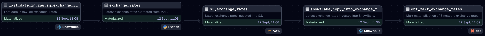

Exchange Rates Ingestion Pipeline
Jan 2024 ~ Flo Energy
Length: 1mo (at 0.5 FTE)
Programming language: Python (os, datetime, pytz, snowflake-connector-python, Pandas,
urllib3, Dagster)
Data: Daily SGD exchange rates provided by the Monetary Authority of Singapore
(MAS)
Problem description:
Orchestrate a pipeline that retrieves the latest exchange rates through an API, loads them
into Snowflake via Amazon S3, and then materializes the downstream dbt models
Approach & Results:
In the image below, one can observe the architecture of the ingestion pipeline. First, a Python
connector queries the raw Snowflake table for the last date with an exchange rate. Then, this
date is used together with the code execution date to create the date range for which the latest
SGD exchange rates will be retrieved using the MAS API. After the rates are fetched in a
Pandas dataframe, they are exported as a .csv file to the Amazon S3 bucket that serves as a
data lake and later copied into the raw Snowflake table. Finally, the dbt models downstream
are materialized.
Taking into account a potential erroneous API response, a retry policy was implemented to
repeat a failing operation up to three times, with a delay of ten minutes between the runs.
Furthermore, each pipeline step was programmed into a Dagster Software-defined asset and
linked in a Dagster job. This job was scheduled to run every working day shortly after the
exchange rates are published by MAS. Therefore, the latest exchange rates are automatically
retrieved and ingested into the data warehouse with minimum human supervision.
